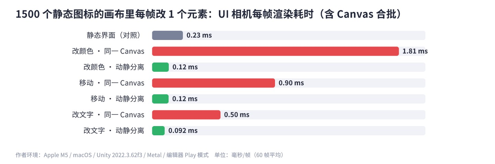
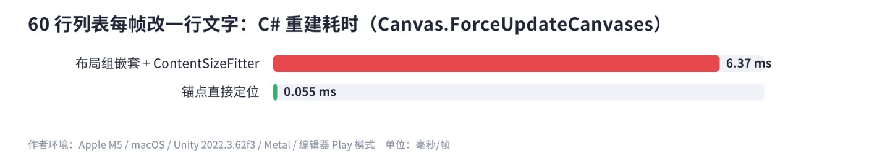
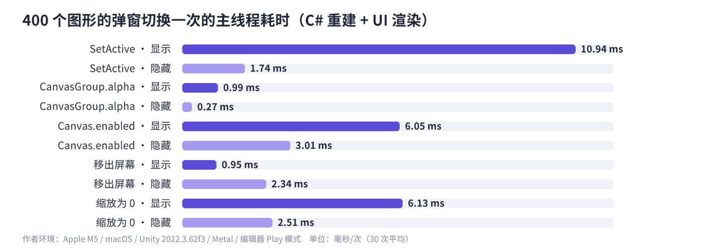
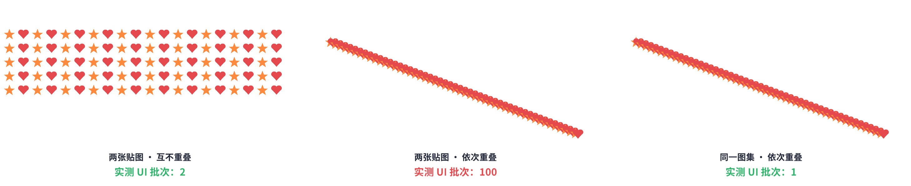
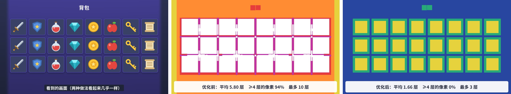
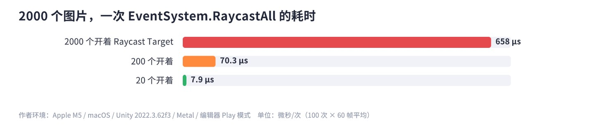
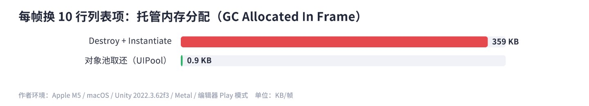

关于 UGUI 优化，网上流传着很多“规则”：动静分离、少用 Layout、用 RectMask2D 别用 Mask、隐藏界面用 CanvasGroup……有的对，有的只在某些条件下对，有的在新版本里已经不成立。这一章不复述规则，而是在配套工程里搭了一个“性能实验室”，把每一条都放到同一台机器、同一个 Unity 版本上测一遍，用数字说话，再从源码里找原因。
优化的第一原则是先测量、再动手。UI 的开销分布在一帧里的好几个阶段，不同问题的“症状”出现在完全不同的地方。把一帧里与 UGUI 相关的工作画出来：
对应的工具：
PostLateUpdate.PlayerUpdateCanvases（重建）和渲染相关的条目，看 Layout、Canvas.BuildBatch、Canvas.SendWillRenderCanvases 的耗时与调用次数；打开 Deep Profile 可以细到每个 Graphic 的 RebuildProfiler · UI / UI DetailsProfiler 里的 UI 模块：按画布列出 Batch 数、顶点数、哪些元素导致了批次中断（Batch Breaking Reason），对排查合批问题非常直接Frame Debugger。逐个查看本帧的每次绘制，UI 的绘制显示为 Canvas.RenderSubBatch（Camera / World 画布）或在 UGUI.Rendering.RenderOverlays 下（Overlay 画布）。能看到每一批用了哪张贴图、哪个材质Overdraw 视图Scene 视图左上角的绘制模式下拉框选 Overdraw：越亮表示同一像素被画的次数越多。本章还会给一个运行时版本，真机上也能看Memory ProfilerPackage Manager 安装 Memory Profiler 包，看图集、字体纹理、RenderTexture 占了多少内存为了让每个结论都可复现，我在配套工程里写了一个实验室：PerfLab 在 Play 模式下逐个运行实验，每个实验先预热 10 帧，再连续测 30～60 帧取平均。实验本身只需要描述两件事：搭什么界面（Setup）和每帧改什么（Tick）。比如“动静分离”实验：
测量由实验室统一完成，每帧在 LateUpdate 里做这几件事：
RebuildCounter 用反射读 CanvasUpdateRegistry 的两个私有队列；另外给每个 Graphic 注册 RegisterDirtyVerticesCallback 等三个回调，统计每帧被标脏的次数（TMP 的 TextMeshProUGUI 也会触发这些回调）。Canvas.ForceUpdateCanvases()——它同步执行 CanvasUpdateRegistry 的 PerformUpdate，也就是布局和网格生成的全部 C# 工作（第 12 章）。Render()，渲染次数可控；Canvas 的合批工作就发生在这里，一部分在主线程（Canvas.BuildBatch），大部分在工作线程的 Job 里。ProfilerRecorder 读 Batches Count、SetPass Calls Count、Triangles Count、GC Allocated In Frame，以及 Canvas.BuildBatch 和五个 Canvas.*Job 标记的耗时。计数器给的是“上一帧”的值，所以记账时用上一帧的标签。作者环境：Apple M5（10 核）/ macOS 26.5 / Unity 2022.3.62f3 / Metal / 编辑器 Play 模式（batchmode 下运行，Game 视图不渲染）。UI 用 Screen Space - Camera 画布、渲染到 1920×1080 的 RenderTexture（Overlay 画布不经过相机，没法手动控制渲染次数；两种模式的合批规则相同）。下文所有数字都来自 Ch20/Results/perflab_results.txt，正文表格里的“UI 批次”已经减去了相机清屏等基础开销（空画布时 Batches = 1）。
读者可以打开这个场景直接点 Play，大约一分钟跑完全部实验，结果显示在屏幕上并写回结果文件；也可以用菜单 ，它会临时打开 Sprite Packer（图集实验需要）、跑完后自动恢复。你的数字一定和我的不一样——机器不同、版本不同，甚至同一台机器两次运行的毫秒数也会有 ±50% 的波动（我跑过两轮，个别实验差了一倍）。值得关注的是量级和对比关系，这些在多次运行中是稳定的。
实验室里用到的两个统计工具，在自己的项目里也很好用。一个是运行时性能小面板：
它在编辑器 Play 模式和 Development Build 里都能读到这些计数器；正式包里大部分计数器不可用（显示“-”）。标记的值逐帧抖动很大，显示时取最近 30 帧的平均：
第 12 章读过源码：一个 Graphic 的颜色、文字、精灵、尺寸变了，会被“标脏”（SetVerticesDirty / SetMaterialDirty / SetLayoutDirty），排进 CanvasUpdateRegistry 的队列，在本帧渲染前统一重建网格。很多人以为重建的代价就是这一步，其实这只是一半。另一半在原生层：Graphic 的网格交给 CanvasRenderer 之后，它所在的整个 Canvas 都要重新合批——重新排序所有元素、判断哪些能合并、重新生成合并后的大网格。这一步和 Canvas 里元素的总数成正比，而不是和“变了几个”成正比。
静态部分是 1500 个图标 + 40 个文字，动态部分每帧改一个元素：改颜色、移动位置、改文字，各测“和静态内容在同一 Canvas”与“放进一个嵌套 Canvas”两种情况。

| 实验（每帧改 1 个元素） | 标脏（顶点） | C# 重建 | Canvas Job 合计 | UI 渲染（含合批） |
|---|---|---|---|---|
| 静态界面（对照） | 0 | 0.038 ms | 0.003 ms | 0.23 ms |
| 改颜色 · 同一 Canvas | 1 | 0.044 ms | 1.49 ms | 1.81 ms |
| 改颜色 · 动静分离 | 1 | 0.032 ms | 0.012 ms | 0.12 ms |
| 移动 · 同一 Canvas | 0 | 0.024 ms | 0.71 ms | 0.90 ms |
| 移动 · 动静分离 | 0 | 0.018 ms | 0.024 ms | 0.12 ms |
| 改文字 · 同一 Canvas | 1 | 0.043 ms | 0.35 ms | 0.50 ms |
| 改文字 · 动静分离 | 1 | 0.029 ms | 0.006 ms | 0.09 ms |
三个结论：
配套场景里有一个每帧变化的计时器和转圈图标，点按钮在“同一 Canvas”和“动静分离”之间切换，左上角的 RenderStatsHUD 显示 BuildBatch 和主线程耗时的变化。
同样是 60 行的列表，一种用“VerticalLayoutGroup + ContentSizeFitter，每行 HorizontalLayoutGroup，行内文字列再套 VerticalLayoutGroup”搭；另一种全部用锚点直接定位。每帧改其中一行的描述文字。

6.37 ms 对 0.055 ms，100 倍以上的差距。有意思的是两者的“布局队列”里都只有一个元素——区别在于排进去的是谁。TMP 文字变化后调用 LayoutRebuilder.MarkLayoutForRebuild，它会沿着父节点一路往上找，直到最上层那个仍然是布局控制者的节点，把它作为布局根排进队列（源码见第 10 章）。锚点版里，文字的父节点不是布局组，排进去的就是文字自己；嵌套版里，一路找到了最外层的列表，于是 60 行、每行 4～5 个元素、三层布局组全部重新计算一遍尺寸和位置。而且布局一变，所有尺寸变化的元素又会触发顶点标脏，原生层还要重新合批——这一项的 UI 渲染耗时也到了 6.4 ms。
enabled = false），元素位置会保留。列表项内部能用锚点就用锚点。频繁变化的文字（倒计时、数值）放在布局组之外，或者给它固定尺寸、用 LayoutElement 告诉父布局“我的大小不变”界面明明没动，Profiler 里却每帧都有 Layout 或 Graphic 重建——这是最常见的“隐形开销”，原因五花八门：Animator 在播动画、某段代码每帧给文字赋值、某个组件在 Update 里设置 RectTransform 的尺寸……用 RebuildCounter 读出队列里的元素名就能直接定位：
把 RebuildWatcher 挂在场景里任意物体上，界面静止时如果连续 30 帧都有元素在重建，它会打印出完整路径和组件类型。[DefaultExecutionOrder(32000)] 让它尽量晚于其他脚本执行，读到的就是本帧攒下的全部。队列是 UGUI 的私有字段，只能反射读取，这个工具只用于开发期诊断。
关掉一个界面有很多种写法，各有各的拥趸。实验用一个 400 个图形的弹窗（自带嵌套 Canvas、GraphicRaycaster 和 CanvasGroup，五种方法都能用），下面垫一面 800 个图标的墙，分别测“每帧切换一次”时显示和隐藏各自的开销，以及“隐藏后保持不动”时还剩多少绘制：

| 方法 | 显示时 C# 重建 | 显示时 GC | 标脏（显示一次） | 隐藏后 UI 批次 | 隐藏后三角形 |
|---|---|---|---|---|---|
| SetActive | 5.05 ms | 60.6 KB | 顶点 401 / 材质 802 / 布局 401 | 1 | 1602 |
| CanvasGroup.alpha = 0 | 0.037 ms | 0.25 KB | 0 | 1 | 1602 |
| Canvas.enabled = false | 0.98 ms | 60.5 KB | 材质 401 | 1 | 1602 |
| 移出屏幕 | 0.029 ms | 0.20 KB | 0 | 11 | 4800 |
| 缩放为 0 | 1.87 ms | 0.21 KB | 0 | 1 | 1602 |
（隐藏后的“1 个 UI 批次、1602 个三角形”就是底下那面墙；弹窗正常显示时是 11 个批次、4800 个三角形。）逐个分析：
SetAllDirty()——布局、顶点、材质全部标脏（材质标脏 802 次，是因为 MaskableGraphic 的 OnEnable 还会额外标一次）。隐藏时则很便宜。适合“关了很久才会再开”的界面，可以顺便释放引用、停掉逻辑。cullTransparentMesh 关掉重测了一次（实验 hd_hidden_CanvasGroup_nocull），结果依然是 1 个批次。要注意的是：隐藏期间这些元素仍然是“活的”，它们的 Update 照跑、数据一变照样标脏重建，而且必须同时把 blocksRaycasts 设为 false，否则透明的弹窗还在挡点击。OnCanvasHierarchyChanged：// 摘自 com.unity.ugui 1.0.0 Runtime/UI/Core/MaskableGraphic.cs
protected override void OnCanvasHierarchyChanged()
{
base.OnCanvasHierarchyChanged(); // Graphic：从旧画布注销、向新画布注册（GraphicRegistry）
if (!isActiveAndEnabled)
return;
m_ShouldRecalculateStencil = true;
UpdateClipParent();
SetMaterialDirty(); // 每个可遮罩的图形都标脏材质
}
InternalUpdate 里检查 lossyScale 有没有变，变了就重新计算所有字符的 SDF 缩放（TMPro_UGUI_Private.cs 的 InternalUpdate → UpdateSDFScale）。界面里文字越多越贵。① 频繁开关、隐藏期间没有逻辑在跑的界面：CanvasGroup（alpha = 0 + blocksRaycasts = false + interactable = false），切换成本最低。② 频繁开关、隐藏期间数据仍在变（会触发重建）的界面：Canvas.enabled（配合关掉 GraphicRaycaster），隐藏期间的重建不会引起可见画布的重新合批。③ 很久才打开一次的界面：SetActive 或干脆销毁，换取内存和逻辑上的干净。④ 不要用“移出屏幕”做长期隐藏，也不要用缩放为 0 做频繁切换。
第 12 章讲过 Canvas 的合批规则：所有元素按深度（Depth）排序后，相邻的、材质和贴图都相同的元素合并成一个批次；而不重叠的元素可以在排序时调整先后，这给了合批很大的空间。最容易打断合批的，是“重叠 + 交替使用不同贴图”。

互不重叠时，合批器可以把所有 star 排到一起、所有 heart 排到一起，于是只有 2 批；依次重叠时，每个图标都压在前一个上面，绘制顺序不能调换，而相邻两个又恰好是不同的贴图，每一个都单独成批。把两张图打进同一个图集后，它们共享一张纹理，这个问题就消失了。更贴近实际的商店列表（12 行，每行底板 + 图标 + 名字 + 价格）：
| 实验 | UI 批次 | SetPass |
|---|---|---|
| 100 图标 · 两张贴图 · 互不重叠 | 2 | 2 |
| 100 图标 · 两张贴图 · 依次重叠 | 100 | 2 |
| 100 图标 · 同一张贴图 · 依次重叠 | 1 | 2 |
| 100 图标 · 同一图集 · 依次重叠 | 1 | 2 |
| 12 行商店列表 · 底板和 6 种图标各自独立贴图 | 8 | 3 |
| 12 行商店列表 · 底板与图标在同一图集 | 2 | 3 |
| 100 个同贴图图标（不重叠）· 每 10 个夹一个不同材质 | 2 | 3 |
| 100 个同贴图图标（依次重叠）· 每 10 个夹一个不同材质 | 21 | 22 |
| 100 个同贴图图标 · Z = 0 | 1 | 2 |
| 100 个同贴图图标 · 一半 Z = −5 | 1 | 2 |
几个值得注意的点：
合批器给每个元素算深度时，规则大致是：一个元素的深度 = 它下面所有“与它重叠”的元素中最大的深度 + 1（如果它与那个元素可以合批则不必 +1）。于是一个“底板 + 图标 + 文字”的列表项，第一行的底板深度 0、图标 1、文字 2；第二行和第一行互不重叠，底板又可以从 0 开始。最终所有行的底板都在深度 0、图标都在深度 1、文字都在深度 2，同深度、同贴图的元素合成一批——这就是上表里商店列表能压到 2 批的原因。
反过来，如果列表项之间有重叠（比如卡片的阴影向外撑出、压到了下一行），或者行内的顺序是“图标、文字、图标、文字”这样交替，深度就会一层层往上叠，批次随之增加。经验规则是：行内先放所有图片、再放所有文字；让相邻的行之间留出空隙，阴影尽量画进底板图里。用 Frame Debugger 看列表的绘制顺序，如果发现批次随行数线性增长，基本就是这里出了问题。
Sprite Atlas（精灵图集）把多张精灵打包进一张大纹理，运行时精灵自动改用图集里的那一块，代码和 Image 的设置都不用改。
Sprite Atlas V1 - Always Enabled（或 V2）。默认的 Disabled 下，图集只在打包时生效，编辑器 Play 模式里看不到合批效果——这是很多人“打了图集批次没变”的原因。Objects for Packing 里拖入精灵或整个文件夹（拖文件夹的好处是以后放进来的新图自动入图集）。Allow Rotation 和 Tight Packing：旋转打包会让九宫格和 Filled 类型出错；UI 精灵通常是矩形网格，紧密打包没有意义。Pack Preview 查看打包结果。实验室用代码创建了图集（等价于上面的步骤），方便读者一键生成：
图集怎么分？原则是按“同时出现”分：一个界面用到的图放一个图集（背包图集、商店图集），所有界面都用的通用元素（按钮底板、关闭按钮、常用图标）放一个公共图集。不要把整个游戏的 UI 塞进一个超大图集——打开任何界面都要把整张图加载进内存；也不要按“类型”分（所有图标一个图集、所有底板一个图集）——一个界面就会同时用到好几个图集，批次又上去了。图集尺寸一般不超过 2048×2048，在低端机上 4096 的纹理可能根本加载不了。
Canvas.RenderSubBatch，逐个点击，看每一批的 _MainTex 是哪张图。批次数对不上预期时，Profiler 的 UI Details 模块会列出每次中断的原因（不同纹理、不同材质、不同裁剪矩形等）。第 14 章讲过两者的原理：Mask 用模板缓冲（Stencil），遮罩图形先写一遍模板、内容按模板测试、最后再画一遍清除模板；RectMask2D 不用模板，而是把裁剪矩形传给 Shader 做 clip，并且会直接剔除完全在矩形外的元素。实测“滚动列表（每行底板 + 图标 + 两段文字，12 行、视口只显示一部分）”：
| 实验 | UI 批次 | 三角形 | C# 重建（每帧） |
|---|---|---|---|
| 1 个列表 · 不裁剪 | 2 | 432 | 0.017 ms |
| 1 个列表 · Mask | 6 | 450 | 0.019 ms |
| 1 个列表 · RectMask2D | 3 | 310 | 0.075 ms |
| 4 个列表并排 · 不裁剪 | 2 | 1722 | 0.037 ms |
| 4 个列表并排 · Mask | 6 | 1794 | 0.025 ms |
| 4 个列表并排 · RectMask2D | 9 | 1234 | 0.229 ms |
结果比“RectMask2D 永远更好”的说法复杂：
PerformClipping 每帧都会遍历所有被它裁剪的图形调用 Cull：// 摘自 com.unity.ugui 1.0.0 Runtime/UI/Core/RectMask2D.cs，PerformClipping() 的最后一个分支
else
{
foreach (MaskableGraphic maskableTarget in m_MaskableTargets)
{
//Case 1170399 - hasMoved is not a valid check when animating on pivot of the object
maskableTarget.Cull(clipRect, validRect);
}
}
矩形裁剪的滚动列表、单独的裁剪区域：优先 RectMask2D，它的批次和顶点都更少，还能剔除视口外的元素。同一界面有很多个并排的小裁剪区（比如一排 10 个带圆角裁剪的卡片）：两种都测一下再决定；需要非矩形形状（圆形头像、圆角）时只能用 Mask，或者干脆用带透明边的图片 / 自定义 Shader 代替。RectMask2D 下面挂的图形越多，每帧的固定开销越大——上千个元素的长列表应该用第 18 章的循环列表，而不是指望 RectMask2D 的剔除。
前面两类开销都在 CPU。UI 在 GPU 上的主要开销是填充率：屏幕上每个像素被画了几次。UI 几乎全是半透明混合，不能像不透明物体那样靠深度测试跳过被挡住的像素——被完全盖住的背景照样要画、照样要混合。一个全屏的半透明遮罩，在 1080p 屏幕上就是两百万次像素混合。移动 GPU 的带宽有限，几层全屏 UI 叠起来就能把帧率拖垮，而且这类问题在 PC 上测不出来。
Scene 视图的 Overdraw 模式只能看个大概。为了得到具体数字，本章写了一个专用 Shader：每个 UI 片元都往颜色缓冲里加一个固定值（Blend One One），不读贴图——透明像素在 GPU 上一样要跑片元着色器、一样要混合，这正是 Overdraw 的代价。它保留了 Stencil 和 RectMask2D 的裁剪，结果和真实绘制一致：
把界面上所有图形的材质换成它，渲染一帧、读回像素，每个像素的亮度除以“每层的增量”就是它被画的层数：
测试场景是一个常见的情形：主城界面上打开一个全屏的背包界面。“优化前”是很多项目的真实写法——主城没有关、背包有一张大面积的装饰光晕和一层暗角、每个格子由阴影 + 底板 + 边框 + 图标四层叠成；“优化后”关掉了被完全挡住的主城、去掉装饰层、格子底板和边框合成一张图：

从 5.80 层降到 1.66 层，GPU 的像素混合量减少了七成，而玩家看到的画面几乎没有区别。降低 Overdraw 的手段：
Tight（Image 需要勾选 Use Sprite Mesh），让网格贴着不透明区域生成，代价是顶点更多。“用一张透明度为 0 的 Image 做全屏点击区”是被反复批评的写法，理由是“它照样会画”。实测发现，在 Unity 2022.3 里这件事要分情况：
| 全屏点击区的做法 | UI 批次 | 三角形 | 点击是否生效 |
|---|---|---|---|
| 透明度 0 的 Image（默认设置） | 1 | 402 | 是 |
| 透明度 0 的 Image，关闭 Cull Transparent Mesh | 2 | 404 | 是 |
| EmptyRaycast（只接收射线、不生成网格） | 1 | 402 | 是 |
（背景是 200 个图标，占 1 批、400 个三角形。）CanvasRenderer 有一个 cullTransparentMesh 属性（Inspector 里的 Cull Transparent Mesh），勾选时顶点颜色完全透明的网格不会被提交绘制。在本书环境中新建的 Image 它是开着的，所以透明 Image 并没有多画；关掉它之后就多了 1 个批次、一个全屏四边形——也就是一层全屏 Overdraw。项目里很多旧预制体、第三方插件生成的 UI 这个选项可能是关着的。
即便如此，专门写一个“只接收射线、不画任何东西”的 Graphic 仍然是更好的选择：它不依赖这个开关，也不会在有人把透明度调成 0.01 做淡入时突然开始绘制，语义上也更清楚——看到这个组件就知道它是点击区：
运行时查看 Overdraw 的工具（按 F2 切换，真机 Development 包里也能用）：
每次点击、甚至每帧鼠标移动，EventSystem 都要让每个 GraphicRaycaster 检测一遍它的画布上所有开着 Raycast Target 的图形。源码里的循环（第 11 章）：
// 摘自 com.unity.ugui 1.0.0 Runtime/UI/Core/GraphicRaycaster.cs
for (int i = 0; i < totalCount; ++i)
{
Graphic graphic = foundGraphics[i];
// -1 means it hasn't been processed by the canvas, which means it isn't actually drawn
if (!graphic.raycastTarget || graphic.canvasRenderer.cull || graphic.depth == -1)
continue;
if (!RectTransformUtility.RectangleContainsScreenPoint(graphic.rectTransform, pointerPosition, eventCamera, graphic.raycastPadding))
continue;
...
}

2000 个目标时一次 RaycastAll 要 658 μs，20 个时只要 7.9 μs——耗时和目标数几乎严格成正比。在桌面上 0.66 ms 看起来不多，但 StandaloneInputModule 每帧都会为鼠标做一次射线检测（悬停效果需要），手机上多点触控时每根手指一次，低端机的 CPU 又比 M5 慢好几倍。
实际项目里，界面上真正需要接收点击的元素通常不到总数的十分之一：文字、图标、装饰图都不需要。可惜 Unity 新建的 Image、TMP 文字默认都开着 Raycast Target。解决办法是团队约定 + 工具检查：第 21 章提供了一个“一键关闭非交互元素 Raycast Target”的编辑器工具和预制体规范检查。其他要点：
raycastPadding（负值向外扩）或者 EmptyRaycast，而不是在下面垫一张大透明图。常见的建议是：每帧变化的数字用 SetText("金币：{0}", n)，不要用 text = "金币：" + n，因为后者每次都要分配一个新字符串。实测（30 个文字每帧更新）：
| 写法 | 每帧 GC | C# 重建 | 标脏 |
|---|---|---|---|
text = "金币：" + n | 2.43 KB | 0.42 ms | 30 |
SetText("金币：{0}", n) | 2.90 KB | 0.42 ms | 30 |
每帧赋相同的字符串 text = same | 0.23 KB | 0.016 ms | 0 |
每帧 SetText("金币：{0}", 100)（值不变） | 2.50 KB | 0.47 ms | 30 |
编辑器里 SetText 并没有省下内存，原因在 TMP 3.0.7 的源码里——SetText 系列方法的末尾有这么一段：
// 摘自 com.unity.textmeshpro 3.0.7 Scripts/Runtime/TMP_Text.cs，SetText(...) 内 #if UNITY_EDITOR m_text = InternalTextBackingArrayToString(); #endif
为了让 Inspector 能显示当前文字，编辑器下 SetText 会把内部字符缓冲转回字符串，于是同样产生了分配。这段代码在真机包里不存在，SetText 在真机上确实是零分配的——这正是 20.1 节说“GC 结论要在真机上确认”的原因。下面两行更值得注意：
text 赋一个相同的字符串，TMP 会直接忽略（setter 里先比较了长度和内容），不标脏、不重建；if (n != m_Last) { m_Last = n; label.SetText("{0}", n); }。每帧改一段文字：Auto Size 关闭时 C# 重建 0.078 ms，开启时 0.41 ms，约 5 倍。TMP 的自动字号是“排一次版 → 放不下就缩小字号 → 再排一次”的迭代过程，文字越长、可选字号范围越大，迭代次数越多。静态文字开着无所谓；每帧变化、或者在列表里大量实例化的文字，关掉 Auto Size，用固定字号 + 截断。
用《千字文》的前 383 个不重复的字测动态字体：第一次排版耗时 219.7 ms，已缓存后只要 1.45 ms，差了 150 倍。第一次出现的字要由 FontEngine 从字体文件里光栅化成 SDF 写进图集纹理，这个过程很重。玩家打开一个从未打开过的界面、聊天里出现了一堆新字，都会在那一帧卡一下。对策：
fontAsset.TryAddCharacters(常用字)，把卡顿挪到玩家看不到的地方；
每帧换掉 10 行，Destroy + Instantiate 的写法每帧分配约 359 KB 托管内存、Tick 耗时 1.28 ms；对象池的写法分配 0.87 KB、耗时 0.55 ms。耗时只差一倍多，但 GC 分配差了 400 倍——托管堆的垃圾攒多了就会触发一次 GC，在手机上一次 GC 停顿几毫秒到几十毫秒，表现为周期性的卡顿。飘字、伤害数字、列表项、聊天气泡这类反复出现的东西都应该用对象池：
注意池化并不是零成本：取出时 SetActive(true) 依然会让所有 Graphic 走 OnEnable、全部标脏（实验里每帧 50 次顶点标脏、80 次材质标脏），C# 重建只比 Instantiate 少一点（0.43 ms 对 0.51 ms）。如果连这部分也想省，可以不 SetActive，而是用 CanvasGroup 隐藏或者把回收的对象移到一个 Canvas.enabled = false 的池节点下，按 20.4 节的结论选择。
用 Animator 做 UI 动画（按钮呼吸、图标旋转）很方便，但它有一个代价：Animator 写属性后会调用组件的 OnDidApplyAnimationProperties，而 Graphic 的实现是：
// 摘自 com.unity.ugui 1.0.0 Runtime/UI/Core/Graphic.cs
protected override void OnDidApplyAnimationProperties()
{
SetAllDirty();
}
实测 40 个挂了 Animator 的图标：动画曲线真的在变化（透明度在 1 和 0.9 之间呼吸）时，每帧 40 次顶点标脏 + 40 次材质标脏，C# 重建 0.24 ms、Canvas Job 0.48 ms；而动画曲线是常量（数值始终为 1、看起来不动）时，本书环境下标脏次数为 0，和不挂 Animator 一样。也就是说，在这个版本里“值没变就不会触发”，但只要在播放、值在变，就是整个 Graphic 的全量标脏——改个透明度连材质都标脏了，而代码补间改 color 只会标脏顶点。
建议：常驻的循环动画（呼吸、旋转、闪烁）用代码补间（第 15 章），只改需要改的属性；Animator 用在一次性的、复杂的过场动画上，并且播完之后禁用 Animator 组件；挂 Animator 的元素放进单独的 Canvas（动静分离）。
3D 场景用 2000 个球体（每个都是一次 Draw Call），上面打开一个完全不透明的全屏界面。3D 相机继续渲染时，Batches = 2013、三角形 153 万、3D 相机渲染耗时 1.98 ms；关掉 3D 相机后，Batches = 10，这部分开销完全消失——而玩家看到的画面没有任何区别，因为 3D 画面本来就被全屏界面完全挡住了。
做法很简单：UI 框架打开“全屏不透明”的界面时，记录并关闭主相机（camera.enabled = false，或者把 Culling Mask 设成 Nothing），关闭界面时恢复。要注意两点：如果界面背景需要显示一张场景截图（模糊背景，第 14 章），先截一张再关相机；如果场景里有依赖相机的逻辑（比如按相机可见性做剔除的 AI），要确认关掉相机不会影响它们。
Screen.SetResolution 或 URP 的渲染缩放降低 3D 的渲染分辨率；UI 一般保持原生分辨率以保证清晰纹理压缩UI 图集用 ASTC（iOS / 新安卓）或 ETC2，不要用未压缩的 RGBA32——一张 2048 的 RGBA32 图集占 16 MB，ASTC 6×6 只有 1.8 MB 左右。九宫格、文字类图集如果出现明显色块，可以单独用更高的压缩质量帧率界面静止时降低帧率（Application.targetFrameRate，或用 OnDemandRendering.renderFrameInterval 跳帧渲染）能显著省电降温，对“挂机”“菜单”类场景尤其有效热量与降频手机在持续高负载下会降频，前几分钟流畅、十分钟后卡顿很常见。性能测试要连续跑 15 分钟以上，看稳定后的帧率低端机分级按设备档位关掉一些装饰：UI 粒子、模糊背景、RT 角色展示的分辨率与 MSAA、动画数量真机 ProfileDevelopment Build + Autoconnect Profiler，或者用 Android Studio / Xcode Instruments 看 GPU。编辑器里测得再好，也要在目标设备上复测| 类别 | 检查项 | 依据 |
|---|---|---|
| 重建 | 每帧变化的元素（计时器、血条、转圈图标）放进单独的 Canvas | 实验 20.1：同一 Canvas 下 UI 渲染耗时 5～15 倍 |
| 布局组不超过 3 层，每帧变化的文字不放在布局组里；排完不再变的布局组禁用掉 | 实验 20.2：嵌套布局约 100 倍 | |
| 界面静止时没有任何元素在重建（RebuildWatcher 检查） | 20.3 节 | |
| UI 动画用代码补间；Animator 播完禁用 | 20.11 节：播放中每帧全量标脏 | |
| 隐藏 | 频繁开关用 CanvasGroup（并关 blocksRaycasts）或 Canvas.enabled；不用移出屏幕做长期隐藏 | 20.4 节五种方法实测 |
| 全屏界面打开时，关闭被挡住的界面和 3D 相机 | 20.7、20.12 节 | |
| 合批 | 同一界面的图打进同一个图集，按“同时出现”分图集；编辑器里开启 Sprite Packer 再验证 | 实验 20.3：商店列表 8 批 → 2 批 |
| 重叠的元素尽量用同一贴图 / 同一材质；自定义材质不要和普通元素交错 | 重叠交替：100 批；材质交错：21 批 | |
| 矩形裁剪优先 RectMask2D；大量并排的裁剪区两种都测 | 20.6 节 | |
| 填充率 | Overdraw 视图检查，全屏叠层控制在 2～3 层以内；去掉大面积装饰层 | 实验 20.4：5.80 层 → 1.66 层 |
| 点击区用 EmptyRaycast；检查旧预制体的 Cull Transparent Mesh | 20.7 节 | |
| 射线 | 只有可交互元素开 Raycast Target；纯展示画布删掉 GraphicRaycaster | 实验：2000 个目标 658 μs，20 个 7.9 μs |
| 文字 | 每帧变化的数字用 SetText 并先判断值是否变化；相同字符串赋给 text 不会重建 | 20.9 节 |
| 频繁变化的文字关闭 Auto Size | 约 5 倍重建耗时 | |
| 常用字预热（TryAddCharacters）或用静态字库 + 动态回退 | 首次排版 220 ms vs 缓存后 1.45 ms | |
| 内存 | 反复出现的元素用对象池；RT 按需创建、界面关闭即释放；图集压缩 | 每帧 359 KB → 0.87 KB GC |
| 流程 | 先 Profile 再优化；编辑器只看量级，结论在真机 Development Build 上确认 | 20.1 节 |
SerializedObject 读 CanvasRenderer 的属性，或者在预制体内容加载后直接读 cullTransparentMesh）。